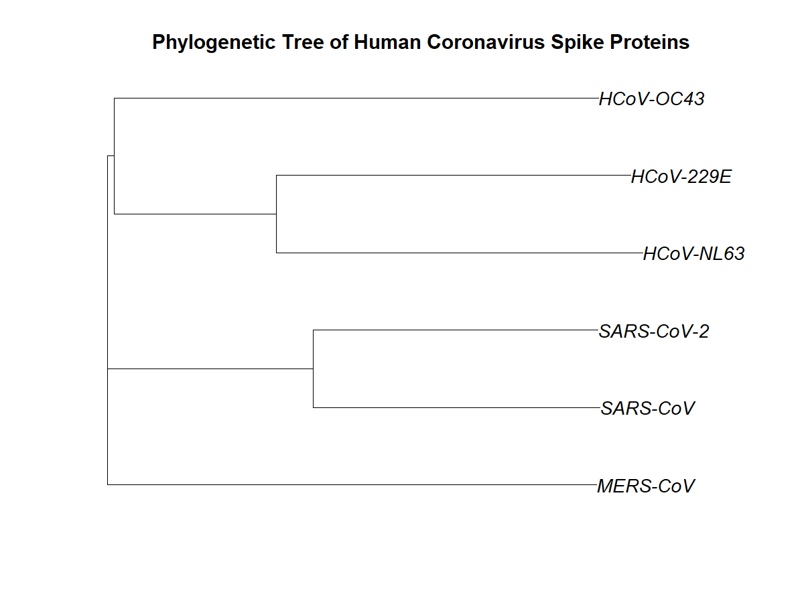

Seven coronaviruses are known to infect humans, ranging from mild seasonal colds (HCoV-229E, HCoV-NL63, HCoV-OC43) to severe epidemic and pandemic disease (SARS-CoV, MERS-CoV, SARS-CoV-2). Comparing their genetic relationships helps explain why some outbreaks were far more severe than others and how these viruses are grouped taxonomically.
The Spike (S) protein mediates viral entry into host cells and is the main target of neutralizing antibodies and vaccines, which makes it a biologically meaningful and widely studied region for comparison. It is worth noting, however, that Spike evolves relatively quickly and is prone to recombination — a point revisited in the Limitations section below.
Six Spike protein sequences were retrieved from NCBI Protein:
| Virus | NCBI Accession | Established Genus | Notable Disease |
|---|---|---|---|
| SARS-CoV-2 | YP_009724390 | Betacoronavirus (Sarbecovirus) | COVID-19 |
| SARS-CoV | AAR07625 | Betacoronavirus (Sarbecovirus) | SARS (2003) |
| MERS-CoV | AHX00731 | Betacoronavirus (Merbecovirus) | MERS |
| HCoV-OC43 | AXX83297 | Betacoronavirus (Embecovirus) | Common cold |
| HCoV-229E | ABB90513 | Alphacoronavirus | Common cold |
| HCoV-NL63 | QED88040 | Alphacoronavirus | Common cold |
Genus classification per ICTV (International Committee on Taxonomy of Viruses), as reported in the virology literature cited under Data Sources.
The workflow followed these steps:
seqinr package.ape package.(Raw sequence files and the full R script are kept private; this page summarizes methodology and results rather than publishing the complete implementation.)

The Spike-based tree correctly grouped SARS-CoV-2 with SARS-CoV, and separately grouped the two Alphacoronaviruses (NL63, 229E) together — both consistent with established taxonomy.
The placement of HCoV-OC43 with the Alphacoronavirus pair, rather than with the other Betacoronaviruses, is inconsistent with ICTV genus classification. This is most plausibly explained by the Spike protein's fast evolutionary rate and known susceptibility to recombination among coronaviruses, combined with the simplifying assumptions of an identity-based distance and Neighbor-Joining approach — rather than by a genuine close relationship between OC43 and the Alphacoronaviruses.
This project does not determine the true genome-wide evolutionary relationships between these viruses, nor does it use statistical support measures (e.g., bootstrap values) or a more conserved marker gene (e.g., RdRp), both of which are standard in rigorous coronavirus phylogenetics.
This project demonstrates a complete molecular phylogenetics workflow — from sequence retrieval, through multiple sequence alignment, to distance-based tree construction — applied to six clinically important human coronaviruses. The analysis correctly recovered the close relationship between SARS-CoV-2 and SARS-CoV, and between the two Alphacoronaviruses, but also revealed a limitation of Spike-based, distance-only phylogenetics: HCoV-OC43 did not group with its true genus. This discrepancy is itself an informative result, illustrating why more rigorous studies rely on conserved genes and statistically supported tree-building methods for deep viral phylogenetics.